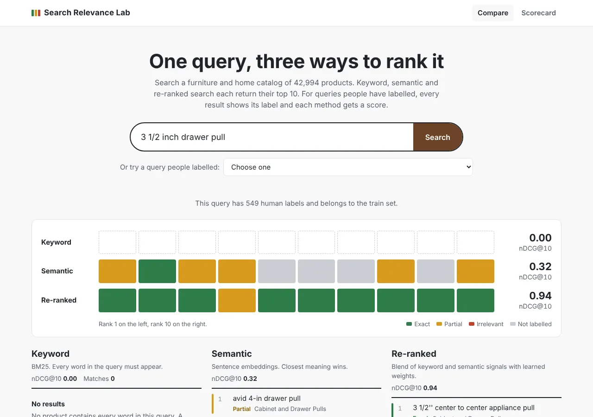
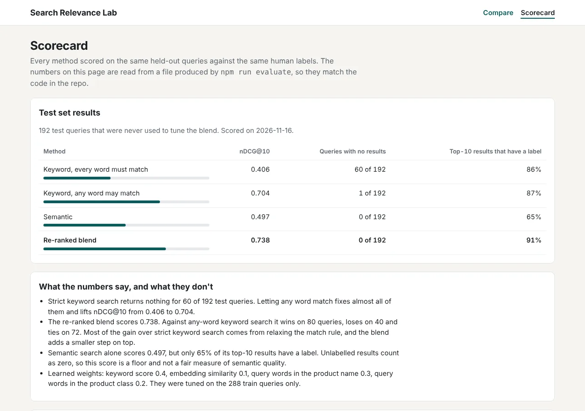

The question
Search teams often argue about relevance from a handful of example queries. This app runs one query through four methods side by side and scores each against human relevance labels, so the argument can use numbers instead.
Approach
- Data: WANDS, an open dataset of 42,994 furniture and home products, 480 search queries and 233,448 relevance labels (Exact, Partial or Irrelevant).
- Methods: strict keyword search (BM25, every word must match), relaxed keyword search (any word may match), semantic search with sentence embeddings, and a blend of four signals with weights tuned by grid search.
- Split: 288 queries to tune the blend and 192 held out for the test.
- Metric: nDCG@10, with gains of 2 for Exact, 1 for Partial and 0 for Irrelevant. Unlabelled results count as 0.

Headline numbers
| Method | nDCG@10 | Queries with no results | Top-10 results with a label |
|---|---|---|---|
| Keyword, every word must match | 0.406 | 60 of 192 | 86% |
| Keyword, any word may match | 0.704 | 1 of 192 | 87% |
| Semantic | 0.497 | 0 of 192 | 65% |
| Re-ranked blend | 0.738 | 0 of 192 | 91% |
WANDS dataset, 192 test queries kept apart from training, scored 16 Nov 2026.
Findings
Strict matching was the largest single problem
Strict keyword search returned nothing for 60 of 192 test queries (31%). Many contain a brand or collection name that is not in the catalogue text. It was fixed by a match rule, with no model involved.
Relaxing the match rule helped even when strict search had results
On the 132 queries where strict search returned something, it scored 0.590. Any-word search scored 0.749 on the same queries. My reading is that strict search often returns fewer than ten products, so good partial matches never appear.
The learned blend added a small step
The blend scored 0.738 against 0.704 for keyword search where any word may match. It won on 80 test queries, lost on 40 and tied on 72. That is about a tenth of the gain from the match rule.
Semantic search was scored unfairly
Only 65% of semantic search's top 10 results had a label, and unlabelled results count as zero. Semantic search finds products with different wording, which are the least likely to have been labelled. Its real quality is above 0.497, by an amount I can't measure yet.
What my own approach got wrong
My first scorecard compared strict keyword search, semantic search and the blend. It showed the blend at 0.738 against 0.406, which looked like a big win for reranking. But the blend draws its candidates from any word search, so the comparison mixed two changes. Adding the any word baseline moved most of the gain to the simpler change.

What I learned as a PM
- Pick the baseline before you look at the result. The comparison you choose decides the size of the win you report.
- A coverage number belongs next to every offline score.
- The cheap fix deserves a test before the expensive one is funded.
What I would do next
- Add a metric that skips unlabelled results, to put a number on the semantic search gap.
- Label a sample of the unlabelled semantic results by hand and rescore.
- Try a current embedding model and a small gradient boosted ranker.
- Add spelling correction and measure it on the 60 empty result queries.
Limits: one dataset, one product domain, English queries, an older embedding model, and no click or sales data. Free hosting can take a minute to wake up.